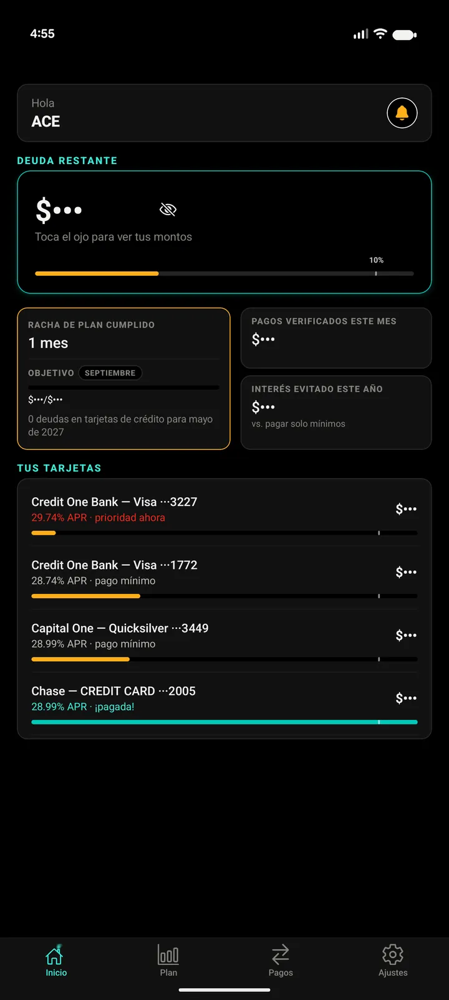
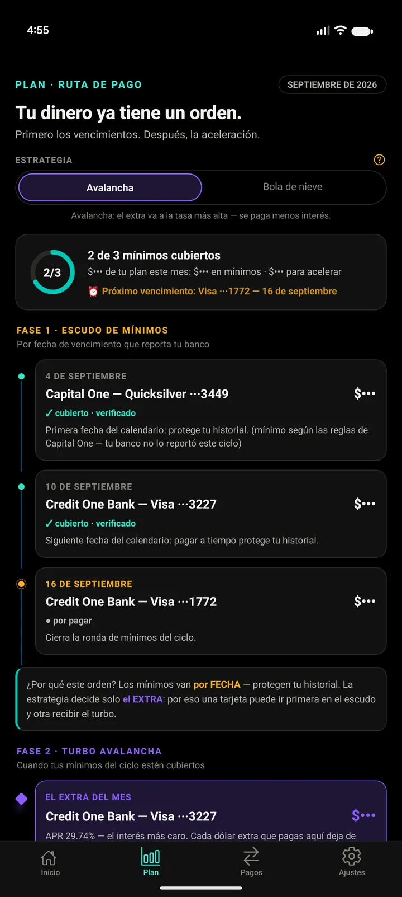
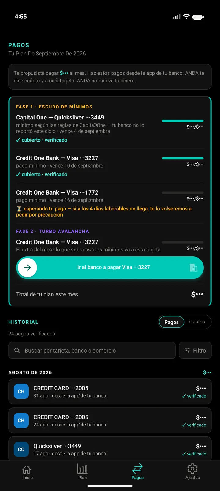

Paga tus deudas con un plan que sí se cumple.
Pay off your debt with a plan that actually sticks.
ANDA calcula. Tú decides. ANDA verifica.
Conecta tus tarjetas en modo solo lectura, dinos cuánto puedes pagar al mes, y ANDA te da la fecha exacta en que llegas a $0 — y verifica cada pago cuando llega a tu tarjeta.
ANDA calculates. You decide. ANDA verifies.
Connect your cards read-only, tell it what you can pay each month, and ANDA gives you the exact date you reach $0 — and verifies every payment when it lands on your card.
Tu dinero nunca pasa por ANDA. Tú pagas desde tu banco.
Your money never passes through ANDA. You pay from your own bank.



Las capturas siguen el idioma y el tema de esta página — y los montos van tapados con el ojito de privacidad, que también es parte de la app.
The screenshots follow this page's language and theme — amounts are covered by the privacy eye, which is part of the app too.
Conecta tus tarjetas
Connect your cards
Con Plaid, en modo solo lectura y solo tarjetas de crédito: tus cuentas de cheques y ahorros no se guardan ni se usan. ANDA ve saldos y pagos; jamás puede tocar tu dinero.
Through Plaid, read-only and credit cards only: your checking and savings accounts are never stored or used. ANDA sees balances and payments; it can never touch your money.
Tu plan, tu fecha
Your plan, your date
Dices cuánto puedes pagar al mes y ANDA arma el plan — avalancha o bola de nieve — con tu fecha de libertad.
Tell it what you can pay monthly and ANDA builds the plan — avalanche or snowball — with your freedom date.
Pagos verificados
Verified payments
Pagas desde tu banco y ANDA ve el dinero llegar. Tu racha cuenta meses cumplidos con dinero real.
You pay from your bank and ANDA watches the money arrive. Your streak counts months completed with real money.
Una herramienta honesta
An honest tool
ANDA nunca inventa un número: si tu banco no reporta un dato, te lo dice y te enseña dónde mirarlo. Es tu plan y tu decisión — ANDA calcula, avisa y verifica. Sin asesoría financiera, sin tocar tu dinero, sin letra chica.
ANDA never makes up a number: if your bank doesn't report something, it says so and shows you where to find it. It's your plan and your decision — ANDA calculates, reminds, and verifies. No financial advice, no touching your money, no fine print.
- 14 días de prueba gratis
- 14-day free trial
- Cancela cuando quieras desde tu tienda
- Cancel anytime from your store
- Tu dinero nunca pasa por ANDA
- Your money never passes through ANDA
¿Muchos bancos que conectar? Dentro de la app hay planes más grandes.
Lots of banks to connect? Bigger plans live inside the app.
¿ANDA puede tocar mi dinero?Can ANDA touch my money?
No. La conexión es para solo lectura y solo de tus tarjetas de crédito — tus cuentas de banco no se tocan. Tú pagas desde tu propio banco; el dinero nunca pasa por ANDA.
No. The connection is read-only and covers only your credit cards — your bank accounts are never touched. You pay from your own bank; money never passes through ANDA.
¿ANDA ve mis contraseñas del banco?Does ANDA see my bank passwords?
No. Te conectas por Plaid, la misma pieza que usan miles de apps financieras en EE.UU. Tus credenciales las maneja Plaid; ANDA nunca las ve.
No. You connect through Plaid — the same rails thousands of U.S. finance apps use. Your credentials stay with Plaid; ANDA never sees them.
¿Cuánto cuesta?How much does it cost?
$5.99 al mes o $59.99 al año, con 14 días de prueba gratis. Se cancela desde Google Play o el App Store cuando quieras.
$5.99 a month or $59.99 a year, with a 14-day free trial. Cancel from Google Play or the App Store anytime.
¿Y si un mes no me alcanza para pagar mis tarjetas?What if one month I can't pay my cards like I planned?
Lo que pagas al mes lo decides tú: ajusta tu presupuesto y ANDA recalcula tu fecha al momento. Nada de regaños.
What you pay each month is up to you: adjust your budget and ANDA recalculates your date on the spot. No scolding.
¿ANDA me da consejos financieros?Does ANDA give financial advice?
No — ANDA es una herramienta: calcula, avisa y verifica. Las decisiones son siempre tuyas.
No — ANDA is a tool: it calculates, reminds, and verifies. The decisions are always yours.
¿Puedo borrar mis datos?Can I delete my data?
Sí: desde la app (Borrar cuenta) o en anda.finance/borrar-datos.
Yes: from the app (Delete account) or at anda.finance/borrar-datos.
Sé de los primeros
Be first in line
ANDA está llegando a Google Play y al App Store. Deja tu correo y te avisamos el día que salga — un solo correo, nada de spam.
ANDA is on its way to Google Play and the App Store. Leave your email and we'll let you know the day it ships — one email, no spam.
Tu correo se usa solo para avisarte del lanzamiento.
Your email is used only to tell you about the launch.